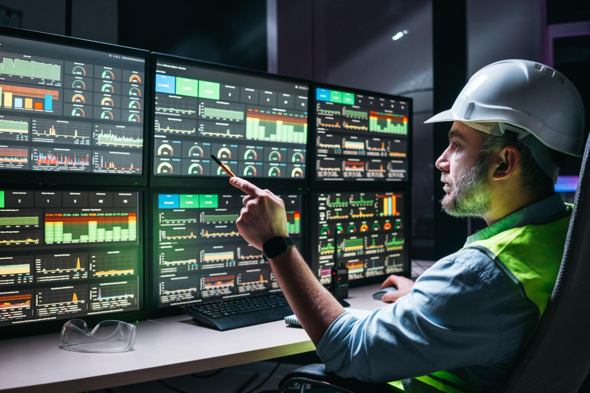
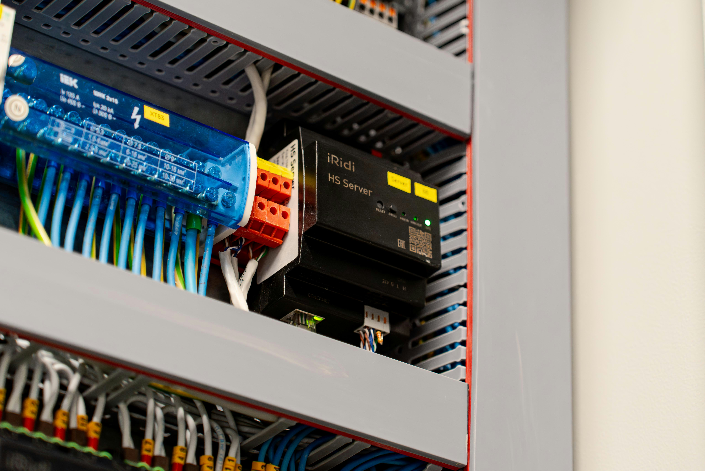
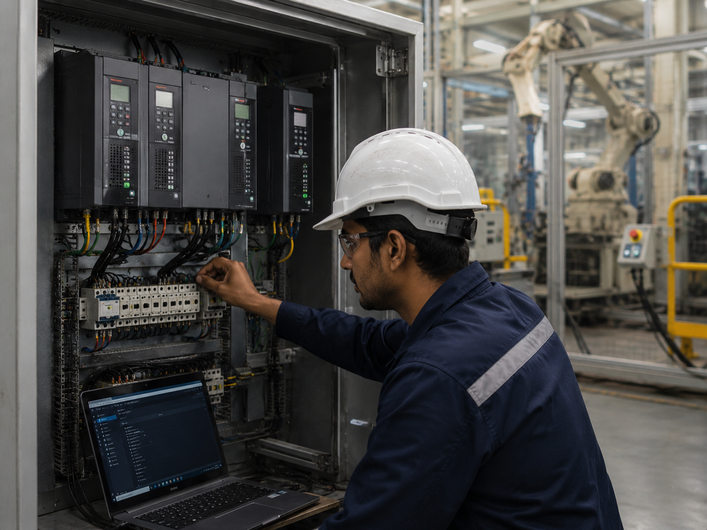
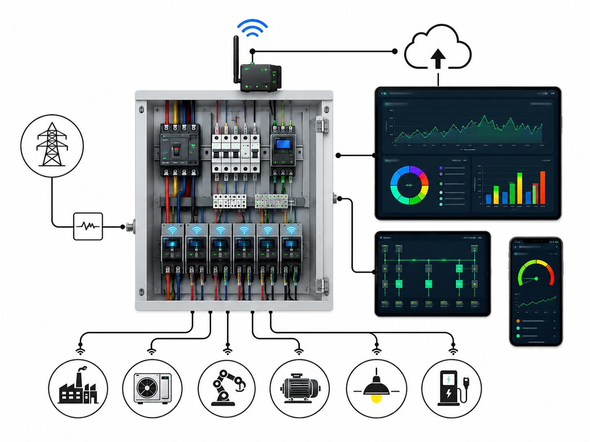
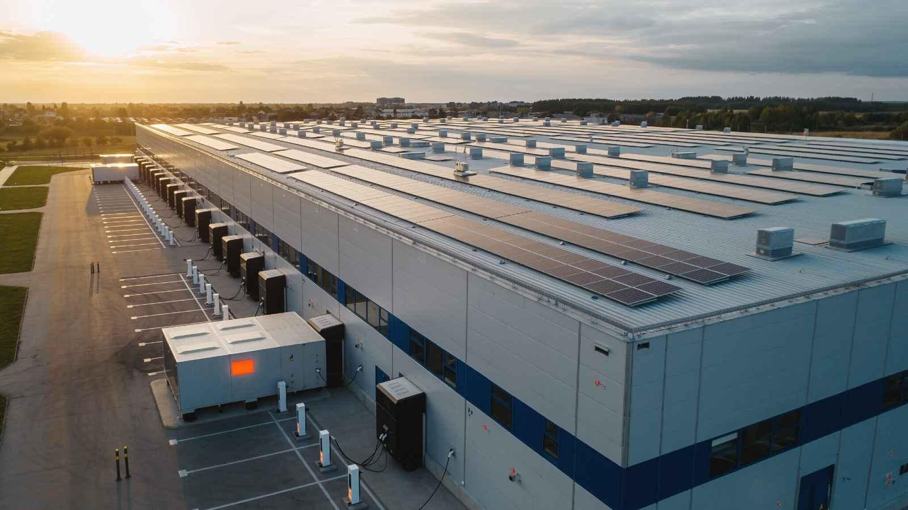
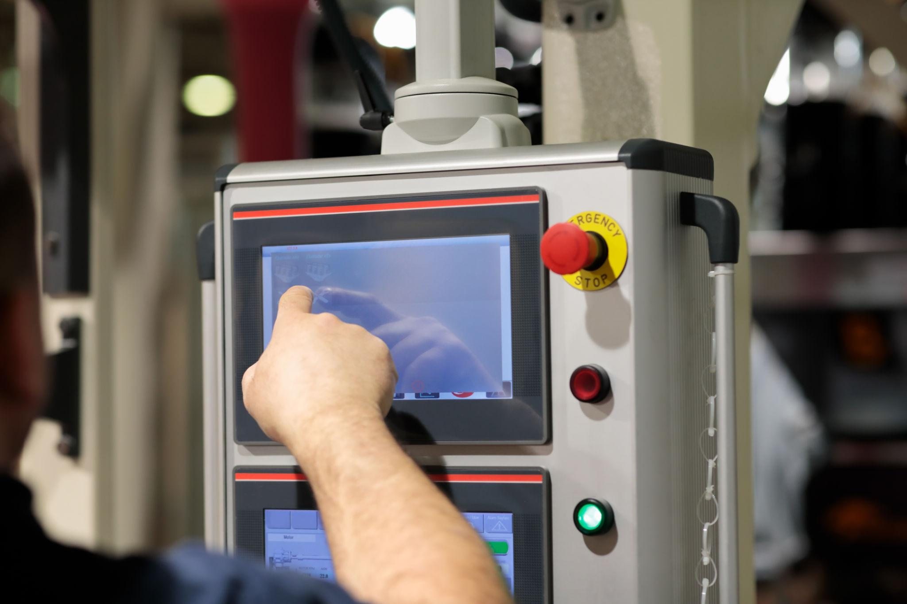

Smarter control systems for reliable, connected industrial operations.
Srilee designs and integrates industrial automation solutions that improve uptime, reduce manual intervention, increase process visibility, and support safe, efficient plant performance. We work across PLC, SCADA, HMI, drives, industrial networking, and data-driven monitoring for modern industries.


Built for uptime, visibility, flexibility, and long-term scalability.
Your automation system should do more than run a machine. It should help operators respond faster, engineers troubleshoot easier, managers view performance clearly, and owners scale without replacing the full system again. That is the focus of our industrial automation approach.
Complete automation stack — from field signals to operator dashboards.
Every automation layer is designed to work together as one dependable system.

PLC Automation
Reliable machine and process control built around real operating conditions, safety logic, and maintainable programming practices.
- Custom PLC programming for machine and process control
- Sequence logic, interlocks, permissives, and alarms
- Panel design support, I/O mapping, and documentation
- Retrofit and migration from legacy control systems
SCADA Systems
Centralized supervision with live process visibility, historical trends, event tracking, and secure remote access.
- Plant-wide monitoring and control from a unified view
- Historical logging, reporting, and operator trends
- Alarm management, audit trails, and notification workflows
- Remote access architecture for multi-site operations
HMI Design
Operator-friendly interfaces that simplify operation, reduce confusion, and improve response during process changes and faults.
- Clean, intuitive screen layouts for operators and maintenance teams
- Real-time process mimic screens and trend visualizations
- Recipe views, status indicators, and guided fault pages
- Consistent screen hierarchy and plant navigation logic

Drives & Motion Control
Efficient motor control solutions for conveyors, pumps, fans, compressors, and motion-critical equipment.
- VFD commissioning, tuning, and parameter configuration
- Servo and motion integration for synchronized applications
- Energy optimization through variable-speed operation
- Fault handling, backup strategy, and commissioning support

IIoT & Remote Monitoring
Connect machines, PLCs, meters, and field devices to dashboards, alerts, and analytics for smarter maintenance and decision-making.
- Protocol integration using Modbus, OPC-UA, MQTT, and gateways
- Remote dashboards for asset performance and plant KPIs
- Email, WhatsApp, or cloud-based alert workflows
- Centralized visibility across multiple plants or sites
Energy & Utility Monitoring
Track electrical parameters, utility consumption, equipment health, and demand trends to support energy-aware operations.
- Energy dashboards and demand analysis
- Power meter and utility data integration
- Trend-based reporting for management review
- Performance benchmarking across lines or sites
What good automation should deliver to your business.
The outcome is not just automation hardware. The outcome is measurable operational improvement.
Reduced Downtime
Better diagnostics, alarm visibility, and consistent process control help teams identify and solve issues faster.
Improved Productivity
Stable control, repeatable operation, and fewer manual steps increase throughput and process consistency.
Lower Energy Waste
Optimized drives, data visibility, and utility analytics reveal where energy is being consumed inefficiently.
Better Decision-Making
Live dashboards, reports, and trend history give managers operational context beyond manual logs and guesswork.
Future Expansion Ready
Scalable architecture allows new lines, new equipment, and additional sites to be integrated with less rework.
Safer Operations
Well-designed interlocks, status indication, and guided operator views help reduce avoidable process risks.
How we bring your automation project to life.
A structured engineering workflow that reduces risk and improves execution quality.
Discovery & Assessment
We study your process, I/O requirements, existing hardware, communication protocols, reporting needs, and pain points before defining the right solution.
Engineering & Design
We prepare control architecture, sequence design, alarm philosophy, HMI screen strategy, and panel engineering documents for aligned implementation.
Build & Testing
Logic, screens, communication, and control strategies are tested before deployment to reduce commissioning delays and avoid avoidable site rework.
Site Commissioning
We support installation, loop checks, startup, tuning, operator orientation, and final performance verification at the plant.
Support & Optimization
After handover, we assist with troubleshooting, modifications, expansion planning, and performance improvements as your operations evolve.
Automation built for demanding industrial environments.
Different industries have different operational needs. We design with those realities in mind.
Manufacturing
Production lines, machine integration, conveyor systems, packaging, and plant-level monitoring.
Water & Wastewater
Pump control, telemetry, STP and ETP automation, dosing systems, and centralized utility dashboards.

Power & Energy
Energy metering, load monitoring, substation visibility, DG synchronization, and utility analytics.

Process Industries
Continuous and batch process control for chemical, food, material handling, and utility-driven operations.
Buildings & Infrastructure
BMS integration, utility monitoring, HVAC visibility, and centralized facility automation workflows.

OEM & Special Machines
Machine control panels, standardized logic, HMI templates, diagnostics, and repeatable deployment models.
Engineering depth. Practical implementation. Long-term support.
We focus on systems that are maintainable in the field, not just attractive in proposals.
Process-First Engineering
Every solution begins with your process, production goals, and site realities instead of a one-size-fits-all template.
Fast, Structured Delivery
Defined milestones, documentation, and test-led execution help projects move with better predictability.
Integration-Focused
We connect PLCs, drives, HMIs, meters, servers, and remote dashboards into one coherent operating ecosystem.
Responsive Support
We stay available for troubleshooting, modifications, and incremental upgrades after project completion.
Complete Documentation
Projects are backed by logic backups, drawings, I/O lists, alarms, reports, and operator-facing guidance.
Digital Expansion Ready
We design with future remote monitoring, analytics, alerts, and cloud connectivity in mind from day one.
From standalone machine control to plant-wide digital visibility.
Whether you need a new PLC panel, SCADA upgrade, remote monitoring solution, VFD commissioning, or full industrial automation architecture, our team can help you design and deploy a practical solution.